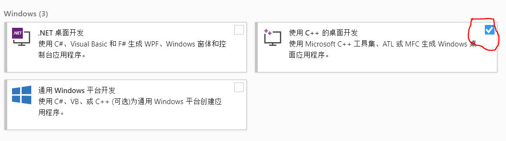
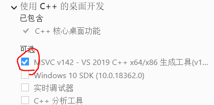
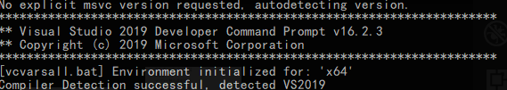

:)
Blender更新2.8的时候，BGE被移除了
前几天突然看到还有个UPBGE，是2.79的时候fork出来的。赶紧下过来看看，是0.2.5release版，基于2.79的Blender，界面一言难尽
之前看到0.3版，大概是基于Blender2.8的
于是下源码 打算手动编一个
1.Cmake
一开始就报错 没有Cmake 于是配个环境变量
2.vs2015
大概是windows自带的工具包过时了，blender不支持。于是用vs installer装一个。


装好后再make 出现这个就可以了

3.wget下载文件夹及其子文件
make之后开始下载这个
https://svn.blender.org/svnroot/bf-blender/trunk/lib/win64_vc15/
svn 连接不太稳定 而且没有反馈 很难受
于是用wget：
wget -c -r -np -nH –cut-dirs=4 -R index.html https://svn.blender.org/svnroot/bf-blender/trunk/lib/win64_vc15/
参考自：
stackoverflow
等它下好